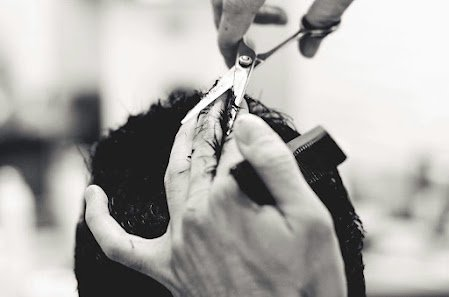
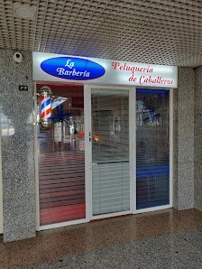

Peluquería de caballeros en el Centro Comercial Santa Mónica, en Rivas-Vaciamadrid. Atención cercana, buen resultado y niños bienvenidos.

Nos tomamos el tiempo de entender lo que buscas y de dejarlo bien hecho.
Aquí también se corta el pelo a los más pequeños, con paciencia y buen trato.
Pago con tarjeta o móvil, acceso para sillas de ruedas y aparcamiento adaptado.
Super majos y un corte inmejorable. Totalmente recomendables.
Francisco I., Local Guide, en GoogleQué gran descubrimiento. Fuimos a cortar el pelo a nuestro bebé de año y medio por recomendación de unos amigos y salimos encantados. Excelente trato con el niño y los papás. Grandes profesionales. Volveremos.
Gisela Q., en GooglePara que no pierdas el tiempo.
Pensado para que entrar sea fácil.
| Lunes | 10:00–14:00 y 16:00–20:30 |
| Martes | 10:00–13:30 y 16:00–20:30 |
| Miércoles | 10:00–13:30 y 16:00–20:30 |
| Jueves | 10:00–13:30 y 16:00–20:30 |
| Viernes | 10:00–13:30 y 16:00–20:30 |
| Sábado | 10:00–14:00 |
| Domingo | Cerrado |
En festivos el horario puede cambiar. Llámanos para confirmarlo.
